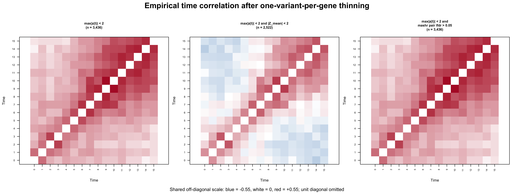
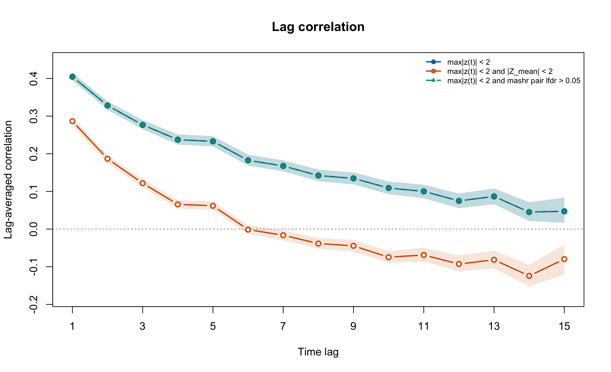
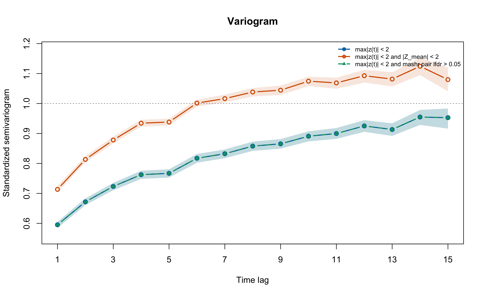
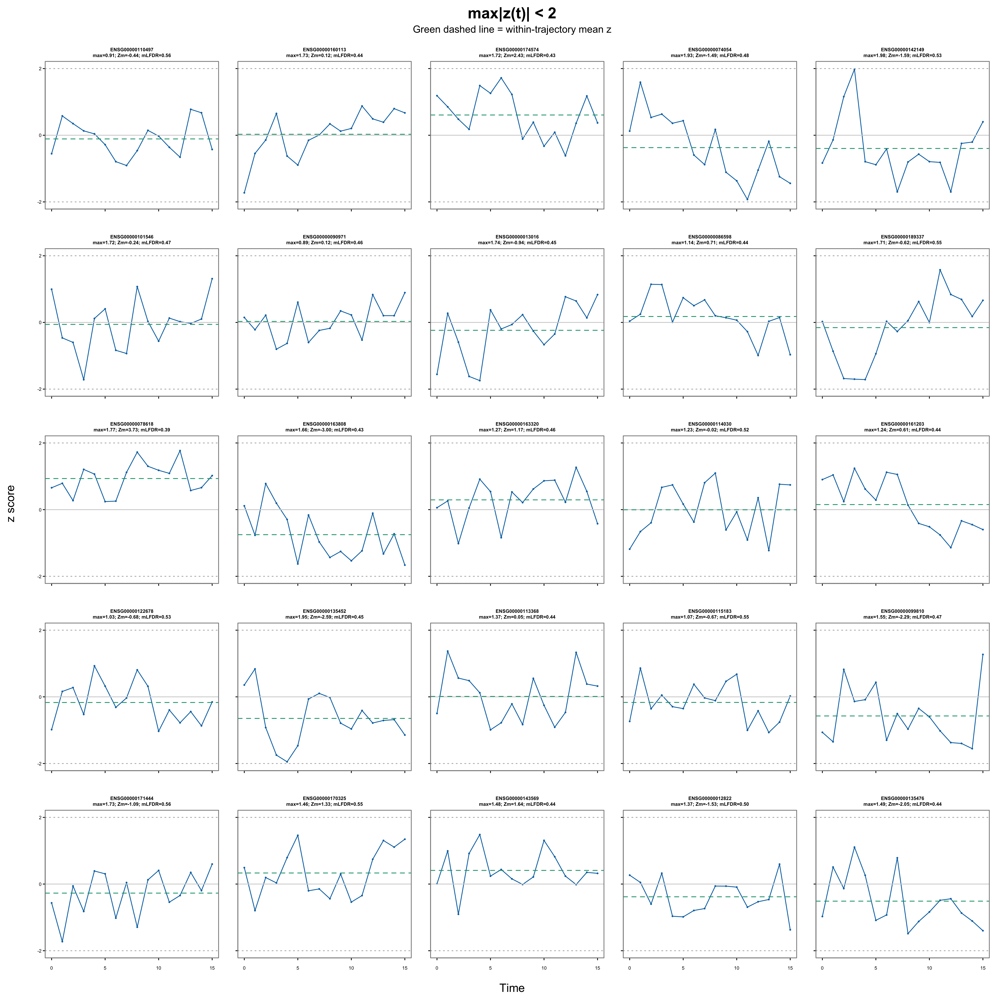
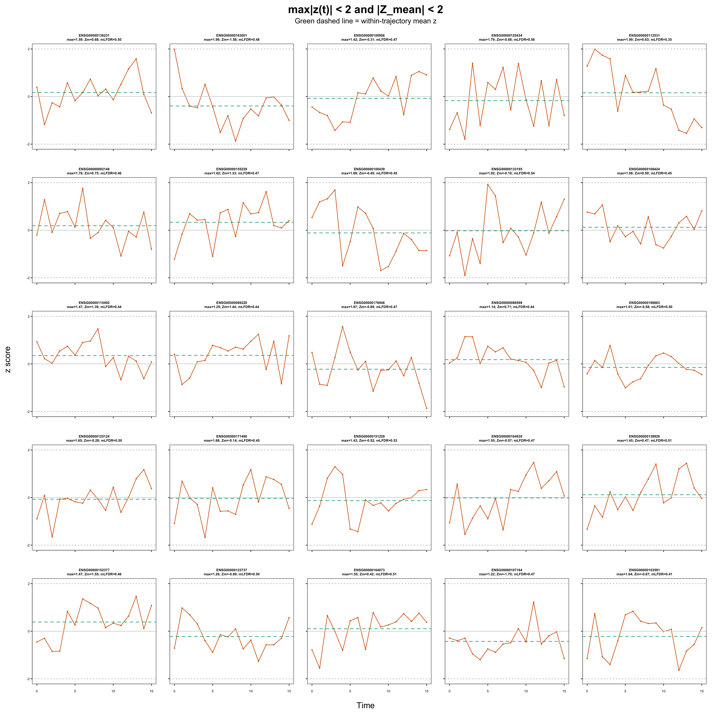
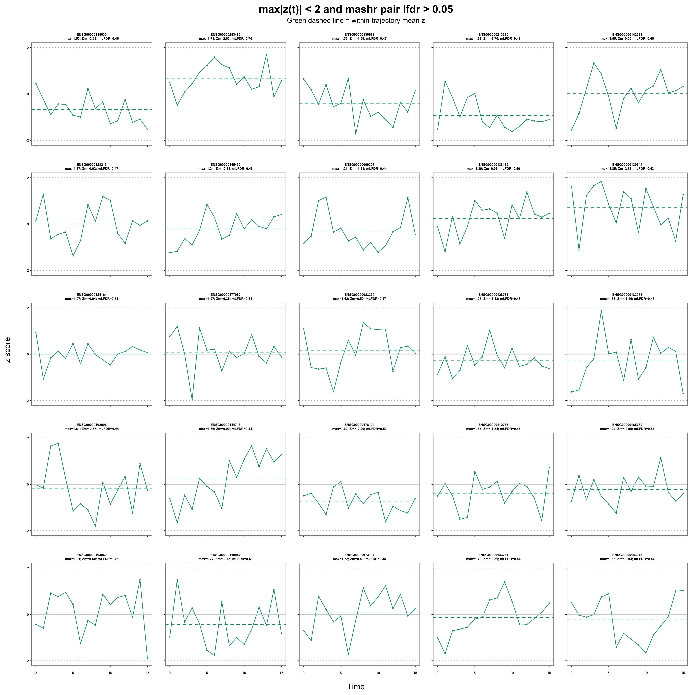

Last updated: 2026-08-07
Checks: 6 1
Knit directory: coderepo-local/
This reproducible R Markdown analysis was created with workflowr (version 1.7.2). The Checks tab describes the reproducibility checks that were applied when the results were created. The Past versions tab lists the development history.
The R Markdown is untracked by Git. To know which version of the R
Markdown file created these results, you’ll want to first commit it to
the Git repo. If you’re still working on the analysis, you can ignore
this warning. When you’re finished, you can run
wflow_publish to commit the R Markdown file and build the
HTML.
Great job! The global environment was empty. Objects defined in the global environment can affect the analysis in your R Markdown file in unknown ways. For reproduciblity it’s best to always run the code in an empty environment.
The command set.seed(20251109) was run prior to running
the code in the R Markdown file. Setting a seed ensures that any results
that rely on randomness, e.g. subsampling or permutations, are
reproducible.
Great job! Recording the operating system, R version, and package versions is critical for reproducibility.
Nice! There were no cached chunks for this analysis, so you can be confident that you successfully produced the results during this run.
Great job! Using relative paths to the files within your workflowr project makes it easier to run your code on other machines.
Great! You are using Git for version control. Tracking code development and connecting the code version to the results is critical for reproducibility.
The results in this page were generated with repository version 9fbd863. See the Past versions tab to see a history of the changes made to the R Markdown and HTML files.
Note that you need to be careful to ensure that all relevant files for
the analysis have been committed to Git prior to generating the results
(you can use wflow_publish or
wflow_git_commit). workflowr only checks the R Markdown
file, but you know if there are other scripts or data files that it
depends on. Below is the status of the Git repository when the results
were generated:
Ignored files:
Ignored: .DS_Store
Ignored: .Rhistory
Ignored: .Rproj.user/
Ignored: analysis/.DS_Store
Ignored: analysis/.Rhistory
Ignored: analysis/site_libs/
Ignored: code/.DS_Store
Ignored: code/.Rhistory
Ignored: data/appendixB/
Ignored: data/dynamic_eQTL_real/
Ignored: data/toy_example/
Ignored: output/dynamic_eQTL_real/
Ignored: output/pdf/
Ignored: output/revision_simulations/
Untracked files:
Untracked: Rplots.pdf
Untracked: analysis/revision_balanced_variant_thinning.rmd
Untracked: analysis/revision_combined_spiky_genotype_simulation.rmd
Untracked: analysis/revision_correlated_error_simulation.rmd
Untracked: analysis/revision_functional_testing_simulation.rmd
Untracked: analysis/revision_genotype_level_simulation.rmd
Untracked: analysis/revision_internal_mashr_mean_z_null_correlation.rmd
Untracked: analysis/revision_internal_observational_null_set_pilot.rmd
Untracked: analysis/revision_internal_one_variant_per_gene_refit.rmd
Untracked: analysis/revision_internal_real_genotype_simulation.rmd
Untracked: analysis/revision_internal_targeted_broad_calibration.rmd
Untracked: analysis/revision_internal_zero_intercept_correlation.rmd
Untracked: analysis/revision_ld_tagging_switch_example.rmd
Untracked: code/00_eQTLs_CL.R
Untracked: code/01_fash_CL.R
Untracked: code/01_fash_CL.sbatch
Untracked: code/09_penalty_sensitivity.R
Untracked: code/09_penalty_sensitivity.sbatch
Untracked: code/revision_simulations/
Untracked: fash_prior_comparison_order1_after.pdf
Untracked: fash_prior_comparison_order1_after.png
Untracked: fash_prior_comparison_order1_before.pdf
Untracked: fash_prior_comparison_order1_before.png
Untracked: fash_prior_comparison_order2_after.pdf
Untracked: fash_prior_comparison_order2_after.png
Untracked: fash_prior_comparison_order2_before.pdf
Untracked: fash_prior_comparison_order2_before.png
Unstaged changes:
Modified: .gitignore
Modified: analysis/dynamic_eQTL_real.rmd
Modified: analysis/index.Rmd
Modified: analysis/nonlinear_dynamic_eQTL_real.Rmd
Modified: code/README.md
Modified: output/toy_example/toy_example_11.pdf
Modified: output/toy_example/toy_example_12.pdf
Modified: output/toy_example/toy_example_21.pdf
Modified: output/toy_example/toy_example_22.pdf
Note that any generated files, e.g. HTML, png, CSS, etc., are not included in this status report because it is ok for generated content to have uncommitted changes.
There are no past versions. Publish this analysis with
wflow_publish() to start tracking its development.
After drawing one variant per gene before inspecting the outcomes, how do the following three screens compare?
Screen 1 is the standard mashr-style maximum-z rule
\[ \max_t |z_j(t)| < 2 \]
and Screen 2 adds the proposed mean-Z rule
\[ \max_t |z_j(t)| < 2 \quad\text{and}\quad |Z_{\mathrm{mean},j}| < 2, \qquad Z_{\mathrm{mean},j}=\sqrt{16}\,\overline z_j? \]
Screen 3 instead starts from Screen 1 and removes pairs called significant by a mashr model fitted to all thinned pairs:
\[ \max_t |z_j(t)| < 2 \quad\text{and}\quad \operatorname{lfdr}_{\mathrm{mashr},j}>0.05. \]
Here the pair-level mashr lfdr is the posterior probability assigned to the exact all-zero effect component. Thus Screen 3 removes a pair only when mashr assigns posterior null probability at most 0.05.
For each retained set, the empirical time correlation is estimated exactly as
\[ \widehat C=\operatorname{cor}(Z_{\mathcal N}), \]
where rows are thinned gene–variant units and columns are the 16 time points. No trajectory is centered within a unit.
Result. Screen 1 retained 3,436 of 6,362 candidates. Screen 3 retained all 3,436 of them: mashr called 72 pairs significant among the complete thinned set, but none of those pairs had passed Screen 1. The minimum mashr pair lfdr inside Screen 1 was 0.109. Consequently, Screen 3 has exactly the same empirical correlation matrix, lag-correlation curve, and variogram as Screen 1.
By contrast, Screen 2 retained 2,522, removing 914 units, or 26.6% of Screen 1. Its mean lag-1 correlation is 0.287, compared with 0.405 under Screens 1 and 3; at lag 15 the corresponding values are -0.080 and 0.047.
The Screen-3 negative result matters: with this threshold and model, a mashr significance filter does not repair the constant-effect contamination that can remain after Screen 1. Screen 2 changes the estimate, but that still is not evidence that its estimate is automatically closer to the residual correlation. It selects directly on a common mode of the same vector whose correlation is being estimated.
The analysis starts from the complete BF-adjusted real-data FASH object with 1,009,173 tested gene–variant pairs from 6,362 genes. Using seed 20260811, it draws one variant uniformly within each gene before extracting beta estimates, adjusted standard errors, z scores, lfdr values, or any other outcome-derived quantity. All three screens are then applied to exactly the same 6,362 thinned candidates.
The second statistic uses the user-specified definition
\[ Z_{\mathrm{mean},j}=\sqrt{R}\,\overline z_j=4\overline z_j, \qquad R=16. \]
Thus \(|Z_{\mathrm{mean},j}|<2\) is equivalent to \(|\overline z_j|<0.5\). The \(\sqrt R\) scaling is calibrated when the 16 coordinates are independent with unit variance. Because cross-time correlation is precisely the object under study, this page treats \(Z_{\mathrm{mean}}\) as an independence-scaled sensitivity screen, not as a calibrated test statistic.
For Screen 3, mashr is fitted once to the complete set of 6,362
thinned pairs. The null correlation is estimated internally using
mashr::estimate_null_correlation_simple() with its standard
threshold 2. This function selects the Screen-1 rows and computes
\[ \widehat C_{\mathrm{mashr}} =\operatorname{cov2cor}\!\left\{ \operatorname{cov}\left(Z_{\mathcal N_1}\right) \right\} =\operatorname{cor}\left(Z_{\mathcal N_1}\right), \]
where \(\mathcal N_1\) is the Screen-1 set. Therefore mashr’s estimated null correlation and the Screen-1 empirical correlation are the same estimator, not two independent estimates; their maximum numerical difference here is 1.11e-16. The full mashr fit then uses the canonical identity, singleton, equal-effects, and simple-heterogeneity covariance families with a null-biased prior. Screen 3 is applied only after this full-data fit.
render_scrollable_table(
selection_table,
align = "lrrrrr",
minimum_width = "1160px",
digits = 3L
)| Screen | Candidates | Retained | Fraction of candidates retained | Maximum absolute time-column mean z | Minimum mashr pair lfdr |
|---|---|---|---|---|---|
| max|z(t)| < 2 | 6362 | 3436 | 0.540 | 0.047 | 0.109 |
| max|z(t)| < 2 and |Z_mean| < 2 | 6362 | 2522 | 0.396 | 0.042 | 0.109 |
| max|z(t)| < 2 and mashr pair lfdr > 0.05 | 6362 | 3436 | 0.540 | 0.047 | 0.109 |
render_scrollable_table(
mashr_screen_summary_table,
align = "lr",
minimum_width = "720px",
digits = 6L
)| Metric | Value |
|---|---|
| All thinned pairs | 6362.000000 |
| Screen 1 pairs | 3436.000000 |
| All-pair mashr lfdr <= 0.05 | 72.000000 |
| Screen-1 mashr lfdr <= 0.05 | 0.000000 |
| Minimum Screen-1 mashr pair lfdr | 0.108677 |
| Mashr fitted pi0 | 0.441216 |
| Null-C versus Screen-1 maximum difference | 0.000000 |
The small time-column means in this table do not prove that individual units have zero constant effects. Positive and negative unit-specific intercepts can cancel in each column while still contributing a positive common covariance across time.
plot_mashr_mean_z_heatmaps()
Empirical z-score correlations under the three screens. All panels use the same off-diagonal scale; the unit diagonal is omitted to make the off-diagonal structure visible. Screens 1 and 3 are exactly identical.
For the specific day-0/day-1 pair, the correlation is 0.297 under both Screens 1 and 3 and 0.221 after adding the mean-Z screen. Screen 3 makes no entrywise change. Across all 120 off-diagonal entries, Screen 2 preserves much of the ordering but shifts almost every entry downward relative to Screens 1 and 3.
render_scrollable_table(
matrix_comparison_table,
align = "llrrrrr",
minimum_width = "1640px",
digits = 4L
)| Reference | Comparison | Off-diagonal matrix correlation | Mean comparison-minus-reference difference | Mean absolute difference | Maximum absolute difference | Frobenius difference |
|---|---|---|---|---|---|---|
| max|z(t)| < 2 | max|z(t)| < 2 and |Z_mean| < 2 | 0.9704 | -0.1624 | 0.1624 | 0.228 | 2.5722 |
| max|z(t)| < 2 | max|z(t)| < 2 and mashr pair lfdr > 0.05 | 1.0000 | 0.0000 | 0.0000 | 0.000 | 0.0000 |
| max|z(t)| < 2 and |Z_mean| < 2 | max|z(t)| < 2 and mashr pair lfdr > 0.05 | 0.9704 | 0.1624 | 0.1624 | 0.228 | 2.5722 |
Intervals are pointwise percentile 95% intervals from 1,000 gene-level bootstrap resamples within each retained set.
plot_lag_correlation_comparison()
Lag-averaged empirical correlations with pointwise gene-bootstrap 95% intervals.
plot_variogram_comparison()
Standardized semivariograms, defined as one minus the lag-averaged correlation, with pointwise gene-bootstrap 95% intervals.
render_scrollable_table(
key_lag_table,
align = "llrlrl",
minimum_width = "1160px",
digits = 3L
)| Screen | Lag | Correlation | Correlation 95% interval | Semivariogram | Semivariogram 95% interval |
|---|---|---|---|---|---|
| max|z(t)| < 2 | 1 | 0.405 | [0.395, 0.415] | 0.595 | [0.585, 0.605] |
| max|z(t)| < 2 | 5 | 0.233 | [0.219, 0.247] | 0.767 | [0.753, 0.781] |
| max|z(t)| < 2 | 10 | 0.109 | [0.093, 0.126] | 0.891 | [0.874, 0.907] |
| max|z(t)| < 2 | 15 | 0.047 | [0.016, 0.084] | 0.953 | [0.916, 0.984] |
| max|z(t)| < 2 and |Z_mean| < 2 | 1 | 0.287 | [0.275, 0.297] | 0.713 | [0.703, 0.725] |
| max|z(t)| < 2 and |Z_mean| < 2 | 5 | 0.062 | [0.051, 0.073] | 0.938 | [0.927, 0.949] |
| max|z(t)| < 2 and |Z_mean| < 2 | 10 | -0.075 | [-0.090, -0.058] | 1.075 | [1.058, 1.090] |
| max|z(t)| < 2 and |Z_mean| < 2 | 15 | -0.080 | [-0.121, -0.041] | 1.080 | [1.041, 1.121] |
| max|z(t)| < 2 and mashr pair lfdr > 0.05 | 1 | 0.405 | [0.395, 0.415] | 0.595 | [0.585, 0.605] |
| max|z(t)| < 2 and mashr pair lfdr > 0.05 | 5 | 0.233 | [0.219, 0.247] | 0.767 | [0.753, 0.781] |
| max|z(t)| < 2 and mashr pair lfdr > 0.05 | 10 | 0.109 | [0.093, 0.126] | 0.891 | [0.874, 0.907] |
| max|z(t)| < 2 and mashr pair lfdr > 0.05 | 15 | 0.047 | [0.016, 0.084] | 0.953 | [0.916, 0.984] |
Screens 1 and 3 have the same persistent positive component that decays from lag 1 to lag 15. The mean-Z restriction in Screen 2 weakens lag 1 and pushes the longer-lag average below zero. Therefore the apparent disappearance of long-range positive dependence is inseparable from the Screen-2 selection rule; the mashr significance filter in Screen 3 provides no change at all.
The stricter rule is not an outcome-neutral refinement. It conditions on the sum of the 16 coordinates. Even if a zero-effect vector originally had independent coordinates, forcing its mean toward zero makes a positive value at one time point more likely to be offset by negative values elsewhere.
The limiting calculation makes the mechanism transparent. If \(z\sim N(0,I_R)\) and one conditions on the exact constraint \(\mathbf 1^Tz=0\), then
\[ \operatorname{Cov}(z\mid\mathbf 1^Tz=0) =I_R-\frac{1}{R}\mathbf 1\mathbf 1^T. \]
After rescaling to a correlation matrix, every off-diagonal entry is \(-1/(R-1)\), which is approximately \(-0.067\) for \(R=16\). The actual screen is a band rather than an exact constraint, and the real coordinates are not independent, so this calculation is not a prediction of the observed matrix. It does show why negative long-lag entries can arise mechanically after screening on \(|Z_{\mathrm{mean}}|\).
Consequently, the comparison identifies a genuine sensitivity but does not by itself identify the true residual correlation. The maximum-only set may retain unit-specific constant effects; the combined set more aggressively removes that common direction but can bias the correlation downward through conditioning.
The visually suspicious Screen-1 example identified in the first gallery is not removed by Screen 3. Its estimated effects are positive at every time point, with an inverse-variance-weighted constant effect near 1, yet its individual z scores all remain below 2. Mashr assigns it pair lfdr 0.394, well above the 0.05 removal threshold. Screen 2 removes it because its \(Z_{\mathrm{mean}}\) is 3.733.
render_scrollable_table(
bad_example_table,
align = "lllrrrrrlll",
minimum_width = "1760px",
digits = 4L
)| Gene | Variant | Beta-hat range | IVW constant beta | max|z| | Z_mean | Mashr pair lfdr | Minimum condition lfdr | Screen 1 | Screen 2 | Screen 3 |
|---|---|---|---|---|---|---|---|---|---|---|
| ENSG00000078618 | rs7544633 | [0.252, 1.466] | 0.9634 | 1.7704 | 3.7331 | 0.3937 | 0.4712 | TRUE | FALSE | TRUE |
This demonstrates why the Screen-3 filter is not equivalent to controlling the common direction. The marginal z scores are deliberately bounded by Screen 1, and under the fitted mashr mixture the accumulated evidence for this smooth, moderate trajectory is not strong enough to make its posterior null probability at most 0.05.
The three tabs show fixed random samples of 25 retained units. The first sample is drawn from the full maximum-z set; 19 of its 25 units also pass the added mean-Z rule and the other 6 do not. The second sample is drawn independently from the combined set. The third sample is drawn independently from Screen 3. Screens 1 and 3 contain the same pairs, but their displayed samples use different fixed seeds, so their gallery panels need not match. Blue, orange, or green lines are z-score trajectories, gray lines mark zero and \(\pm2\), and the green dashed line is the within-trajectory mean z. Full gene and variant identifiers are listed beneath each plot.
plot_gallery(maximum_filter_id)
Twenty-five fixed-random units selected under the maximum-z rule.
render_scrollable_table(
gallery_table(maximum_filter_id),
align = "rllrrrrll",
minimum_width = "1540px",
digits = 4L
)| Position | Gene | Variant | lfdr | max|z| | Z_mean | Mashr pair lfdr | Passes Screen 2 | Passes Screen 3 |
|---|---|---|---|---|---|---|---|---|
| 1 | ENSG00000110497 | rs7126343 | 0.9726 | 0.9081 | -0.4430 | 0.5579 | TRUE | TRUE |
| 2 | ENSG00000160113 | rs11671753 | 0.9342 | 1.7263 | 0.1163 | 0.4434 | TRUE | TRUE |
| 3 | ENSG00000174574 | rs10788903 | 0.9377 | 1.7198 | 2.4284 | 0.4279 | FALSE | TRUE |
| 4 | ENSG00000074054 | rs115949267 | 0.6298 | 1.9266 | -1.4859 | 0.4848 | TRUE | TRUE |
| 5 | ENSG00000142149 | rs2009041 | 0.9187 | 1.9790 | -1.5873 | 0.5287 | TRUE | TRUE |
| 6 | ENSG00000101546 | rs11664633 | 0.9650 | 1.7176 | -0.2359 | 0.4677 | TRUE | TRUE |
| 7 | ENSG00000090971 | rs62127063 | 0.9454 | 0.8930 | 0.1211 | 0.4648 | TRUE | TRUE |
| 8 | ENSG00000013016 | rs6740128 | 0.9486 | 1.7445 | -0.9434 | 0.4521 | TRUE | TRUE |
| 9 | ENSG00000086598 | rs12817861 | 0.9383 | 1.1442 | 0.7128 | 0.4429 | TRUE | TRUE |
| 10 | ENSG00000189337 | rs72865009 | 0.9244 | 1.7146 | -0.6214 | 0.5514 | TRUE | TRUE |
| 11 | ENSG00000078618 | rs7544633 | 0.9455 | 1.7704 | 3.7331 | 0.3937 | FALSE | TRUE |
| 12 | ENSG00000163808 | rs9311361 | 0.9532 | 1.6632 | -3.0027 | 0.4289 | FALSE | TRUE |
| 13 | ENSG00000163320 | rs4287925 | 0.9432 | 1.2674 | 1.1732 | 0.4640 | TRUE | TRUE |
| 14 | ENSG00000114030 | rs9837149 | 0.9522 | 1.2258 | -0.0185 | 0.5226 | TRUE | TRUE |
| 15 | ENSG00000161203 | rs76118461 | 0.9330 | 1.2400 | 0.6098 | 0.4427 | TRUE | TRUE |
| 16 | ENSG00000122678 | rs11762429 | 0.9624 | 1.0318 | -0.6775 | 0.5298 | TRUE | TRUE |
| 17 | ENSG00000135452 | rs11172302 | 0.9415 | 1.9480 | -2.5877 | 0.4463 | FALSE | TRUE |
| 18 | ENSG00000113368 | rs35036110 | 0.9393 | 1.3715 | 0.0497 | 0.4444 | TRUE | TRUE |
| 19 | ENSG00000115183 | rs842074 | 0.9553 | 1.0684 | -0.6683 | 0.5545 | TRUE | TRUE |
| 20 | ENSG00000099810 | rs7029287 | 0.9623 | 1.5541 | -2.2916 | 0.4703 | FALSE | TRUE |
| 21 | ENSG00000171444 | rs10035293 | 0.9486 | 1.7261 | -1.0861 | 0.5621 | TRUE | TRUE |
| 22 | ENSG00000170325 | rs2323898 | 0.9725 | 1.4616 | 1.3280 | 0.5499 | TRUE | TRUE |
| 23 | ENSG00000143569 | rs56760430 | 0.9408 | 1.4840 | 1.6386 | 0.4437 | TRUE | TRUE |
| 24 | ENSG00000012822 | rs57027330 | 0.9354 | 1.3719 | -1.5284 | 0.5024 | TRUE | TRUE |
| 25 | ENSG00000135476 | rs7398228 | 0.9424 | 1.4859 | -2.0509 | 0.4408 | FALSE | TRUE |
plot_gallery(combined_filter_id)
Twenty-five fixed-random units selected after adding the mean-Z rule.
render_scrollable_table(
gallery_table(combined_filter_id),
align = "rllrrrrll",
minimum_width = "1540px",
digits = 4L
)| Position | Gene | Variant | lfdr | max|z| | Z_mean | Mashr pair lfdr | Passes Screen 2 | Passes Screen 3 |
|---|---|---|---|---|---|---|---|---|
| 1 | ENSG00000136231 | rs10216323 | 0.9536 | 1.5861 | 0.6765 | 0.5047 | TRUE | TRUE |
| 2 | ENSG00000163001 | rs62165168 | 0.9155 | 1.9862 | -1.5844 | 0.4754 | TRUE | TRUE |
| 3 | ENSG00000100906 | rs11626786 | 0.9311 | 1.4238 | -0.3087 | 0.4663 | TRUE | TRUE |
| 4 | ENSG00000125434 | rs61619093 | 0.9842 | 1.7909 | -0.6816 | 0.5570 | TRUE | TRUE |
| 5 | ENSG00000112531 | rs9654569 | 0.8602 | 1.9905 | 0.6326 | 0.3540 | TRUE | TRUE |
| 6 | ENSG00000092148 | rs11625798 | 0.9456 | 1.7622 | 0.7521 | 0.4649 | TRUE | TRUE |
| 7 | ENSG00000155229 | rs10786349 | 0.9482 | 1.6185 | 1.3315 | 0.4736 | TRUE | TRUE |
| 8 | ENSG00000100439 | rs5742843 | 0.9216 | 1.6904 | -0.4501 | 0.4487 | TRUE | TRUE |
| 9 | ENSG00000133195 | rs12943630 | 0.9502 | 1.9232 | -0.0968 | 0.5441 | TRUE | TRUE |
| 10 | ENSG00000108424 | rs8065669 | 0.9414 | 1.0619 | 0.5007 | 0.4504 | TRUE | TRUE |
| 11 | ENSG00000110492 | rs75794821 | 0.9382 | 1.4735 | 1.3858 | 0.4414 | TRUE | TRUE |
| 12 | ENSG00000089220 | rs795483 | 0.9383 | 1.2452 | 1.4375 | 0.4417 | TRUE | TRUE |
| 13 | ENSG00000176946 | rs34441975 | 0.9458 | 1.8676 | -0.8910 | 0.4718 | TRUE | TRUE |
| 14 | ENSG00000086598 | rs12817861 | 0.9383 | 1.1442 | 0.7128 | 0.4429 | TRUE | TRUE |
| 15 | ENSG00000198663 | rs12111266 | 0.9519 | 1.0065 | -0.5824 | 0.4960 | TRUE | TRUE |
| 16 | ENSG00000125124 | rs16959711 | 0.9534 | 1.6524 | -0.2768 | 0.5037 | TRUE | TRUE |
| 17 | ENSG00000171490 | rs33637 | 0.9389 | 1.6802 | -0.1420 | 0.4491 | TRUE | TRUE |
| 18 | ENSG00000151229 | rs77943660 | 0.9601 | 1.4338 | -0.5173 | 0.5336 | TRUE | TRUE |
| 19 | ENSG00000164930 | rs3133830 | 0.9367 | 1.5479 | -0.0678 | 0.4749 | TRUE | TRUE |
| 20 | ENSG00000139926 | rs1885033 | 0.9286 | 1.4462 | 0.4705 | 0.5079 | TRUE | TRUE |
| 21 | ENSG00000152377 | rs6863414 | 0.9119 | 1.4674 | 1.5465 | 0.4625 | TRUE | TRUE |
| 22 | ENSG00000123737 | rs72913982 | 0.9549 | 1.2647 | -0.8888 | 0.4956 | TRUE | TRUE |
| 23 | ENSG00000164073 | rs6534656 | 0.9446 | 1.5517 | 0.4158 | 0.5080 | TRUE | TRUE |
| 24 | ENSG00000107164 | rs3802341 | 0.9509 | 1.2234 | -1.7040 | 0.4749 | TRUE | TRUE |
| 25 | ENSG00000103591 | rs8038739 | 0.9474 | 1.6412 | -0.8703 | 0.4103 | TRUE | TRUE |
plot_gallery(mashr_filter_id)
Twenty-five fixed-random units selected after removing mashr discoveries from Screen 1. The retained set is exactly the Screen-1 set in this fit.
render_scrollable_table(
gallery_table(mashr_filter_id),
align = "rllrrrrll",
minimum_width = "1540px",
digits = 4L
)| Position | Gene | Variant | lfdr | max|z| | Z_mean | Mashr pair lfdr | Passes Screen 2 | Passes Screen 3 |
|---|---|---|---|---|---|---|---|---|
| 1 | ENSG00000185630 | rs74117940 | 0.9216 | 1.5280 | -2.6786 | 0.4593 | FALSE | TRUE |
| 2 | ENSG00000253485 | rs7730183 | 0.9958 | 1.7140 | 2.6251 | 0.7557 | FALSE | TRUE |
| 3 | ENSG00000130669 | rs73551779 | 0.9340 | 1.7248 | -1.6862 | 0.4660 | TRUE | TRUE |
| 4 | ENSG00000213390 | rs4919086 | 0.9637 | 1.6211 | -3.7040 | 0.4731 | FALSE | TRUE |
| 5 | ENSG00000142599 | rs28999101 | 0.9391 | 1.5494 | 0.0489 | 0.4646 | TRUE | TRUE |
| 6 | ENSG00000123213 | rs10070137 | 0.9514 | 1.3744 | 0.0222 | 0.4731 | TRUE | TRUE |
| 7 | ENSG00000145439 | rs79213600 | 0.9434 | 1.2356 | -0.8341 | 0.4787 | TRUE | TRUE |
| 8 | ENSG00000009307 | rs72996464 | 0.9388 | 1.2128 | -1.2076 | 0.4428 | TRUE | TRUE |
| 9 | ENSG00000138162 | rs2420980 | 0.9308 | 1.3858 | 0.9660 | 0.4975 | TRUE | TRUE |
| 10 | ENSG00000139644 | rs7312658 | 0.9387 | 1.8468 | 2.8289 | 0.4347 | FALSE | TRUE |
| 11 | ENSG00000124164 | rs8115522 | 0.9654 | 1.0693 | 0.0434 | 0.5279 | TRUE | TRUE |
| 12 | ENSG00000177082 | rs10852053 | 0.9582 | 1.9689 | 0.3478 | 0.5107 | TRUE | TRUE |
| 13 | ENSG00000023330 | rs74665344 | 0.9308 | 1.6210 | 0.5885 | 0.4704 | TRUE | TRUE |
| 14 | ENSG00000128731 | rs1635169 | 0.9506 | 1.0513 | -1.1324 | 0.4753 | TRUE | TRUE |
| 15 | ENSG00000183978 | rs59700742 | 0.9300 | 1.8806 | -1.1618 | 0.4501 | TRUE | TRUE |
| 16 | ENSG00000102996 | rs55967324 | 0.9381 | 1.8118 | -0.6739 | 0.4428 | TRUE | TRUE |
| 17 | ENSG00000144713 | rs9813534 | 0.9197 | 1.6595 | 0.8987 | 0.4427 | TRUE | TRUE |
| 18 | ENSG00000178104 | rs28549707 | 0.9262 | 1.6213 | -2.9036 | 0.5348 | FALSE | TRUE |
| 19 | ENSG00000112787 | rs56351945 | 0.9517 | 1.5740 | -1.5419 | 0.4557 | TRUE | TRUE |
| 20 | ENSG00000165782 | rs72672714 | 0.9617 | 1.2445 | -0.8968 | 0.5113 | TRUE | TRUE |
| 21 | ENSG00000163960 | rs141974763 | 0.9484 | 1.9139 | 0.5960 | 0.4600 | TRUE | TRUE |
| 22 | ENSG00000110047 | rs7102350 | 0.9261 | 1.7746 | -1.7268 | 0.5136 | TRUE | TRUE |
| 23 | ENSG00000073111 | rs13078270 | 0.9365 | 1.7167 | 0.4062 | 0.4488 | TRUE | TRUE |
| 24 | ENSG00000143761 | rs10916261 | 0.9378 | 1.6977 | -0.5139 | 0.4395 | TRUE | TRUE |
| 25 | ENSG00000143013 | rs1002482 | 0.9392 | 1.6621 | -0.9362 | 0.4719 | TRUE | TRUE |
The defensible conclusion is therefore twofold. First, the proposed mashr-lfdr filter does not improve the maximum-z set in this dataset. Second, the estimated residual-correlation level is sensitive to adding a mean-Z restriction, but that restriction has its own selection effect. This page should remain internal until the estimand and selection argument are settled.
The cache contains the exact candidate z matrix, fitted beta estimates, adjusted standard errors, selected indices, all three complete empirical correlation matrices, the fitted mashr object and posterior weights, bootstrap intervals, gallery membership, input-file provenance, and CSV audit tables.
Rscript --vanilla \
code/revision_simulations/internal/covariance_estimation/run_mashr_mean_z_null_correlation.R
workflowr::wflow_build(
"analysis/revision_internal_mashr_mean_z_null_correlation.rmd",
local = TRUE,
verbose = TRUE
)
sessionInfo()R version 4.5.1 (2025-06-13)
Platform: aarch64-apple-darwin20
Running under: macOS Sequoia 15.6.1
Matrix products: default
BLAS: /System/Library/Frameworks/Accelerate.framework/Versions/A/Frameworks/vecLib.framework/Versions/A/libBLAS.dylib
LAPACK: /Library/Frameworks/R.framework/Versions/4.5-arm64/Resources/lib/libRlapack.dylib; LAPACK version 3.12.1
locale:
[1] C.UTF-8/C.UTF-8/C.UTF-8/C/C.UTF-8/C.UTF-8
time zone: America/Chicago
tzcode source: internal
attached base packages:
[1] stats graphics grDevices utils datasets methods base
loaded via a namespace (and not attached):
[1] vctrs_0.7.3 cli_3.6.6 knitr_1.50 rlang_1.2.0
[5] xfun_0.55 stringi_1.8.7 otel_0.2.0 promises_1.5.0
[9] jsonlite_2.0.0 workflowr_1.7.2 glue_1.8.1 git2r_0.36.2
[13] rprojroot_2.1.1 htmltools_0.5.9 httpuv_1.6.16 sass_0.4.10
[17] rmarkdown_2.30 jquerylib_0.1.4 evaluate_1.0.5 tibble_3.3.0
[21] fastmap_1.2.0 yaml_2.3.12 lifecycle_1.0.5 stringr_1.6.0
[25] compiler_4.5.1 fs_1.6.6 Rcpp_1.1.1-1.1 pkgconfig_2.0.3
[29] rstudioapi_0.17.1 later_1.4.4 digest_0.6.39 R6_2.6.1
[33] pillar_1.11.1 magrittr_2.0.5 bslib_0.9.0 tools_4.5.1
[37] cachem_1.1.0